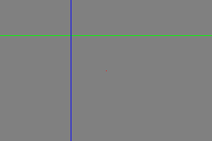

Image numérique⚓︎
Consigne
- Compte-rendu à produire et rendre sur Moodle.
- Commencez par créer un nouveau dossier appelé «Images» dans votre dossier SNT. Vous y sauvegarderez tous les documents (images, compte-rendu, programmes Python) de ce (très long) T.P.
1 - Formats d'image⚓︎
Matriciel vs. Vectoriel
L'image ci-dessous est une image vectorielle (au format SVG - Scalable Vector Graphics), c'est-à-dire qu'elle est composée de formes géométriques définies par des équations mathématiques.

Zoomez sur l'image (CTRL+ molette): il n'y a pas de perte de précision. En effet, à chaque changement d'échelle - de zoom - l'image est recalculée par le navigateur. En enregistrant l'image puis en l'ouvrant avec un éditeur de texte, on peut visualiser les instructions qui décrivent cette image.
 OSINT : Quel logiciel a servi à créer cette image?
OSINT : Quel logiciel a servi à créer cette image?
Pour créer des logos par exemple, c'est très efficace. Mais il est évident qu'on ne peut pas décrire une photo uniquement avec des formes géométriques, cela serait beaucoup trop complexe.
On utilise alors le format matriciel: une image est une grille de points de couleur, appelés pixels. Les formats courants JPG, PNG, WEBP sont des formats matriciels.
 Lire ici.
Lire ici.
2 - Noir et blanc⚓︎
Une première approche pour comprendre comment sont créées les images sur les ordinateurs est de s’intéresser aux images en noir et blanc, comme celle ci-dessous.

- Faire un clic gauche sur l'image ci-dessus pour la télécharger dans votre dossier Images.
- Ouvrir l'image avec le bloc-notes de Windows (ouvrir d'abord le bloc-notes).
Cette image est au format pbm. C'est un simple fichier texte qui contient:
- un nombre magique (pour indiquer le format de l'image, ici P1 pour
pbm); - les dimensions de l'image en pixels : largeur et hauteur;
- les pixels: blanc (0) ou noir (1)
En règle générale, même si ce n'est pas obligatoire, on code ce fichier en respectant le nombre de pixels par ligne pour que l'image soit plus «visible». Par exemple, il est difficile d'anticiper l'image suivante:
P1
18 13
11111100000110001111110011111001110111101111111110110111101111111110101111011111
11111101111101111111111001111101111111110101111101111111101101111101111111011101
11101011110011101111011011001111101111011100111110011111100011000001111111
À vous de jouer!
Copiez-collez le code ci-dessous dans un nouveau fichier du bloc-notes puis enregistrez-le sous le nom mystere.pbm (attention à bien spécifier l'extension pbm dans Type de fichier). Visualisez ensuite l'image en ouvrant le fichier avec le logiciel GIMP.
À vous de jouer!
Créez un fichier smiley.pbm représentant l'image suivante de dimensions 10 x 10 (à vous de juger quand mettre un 0 ou un 1...).

3 - Niveaux de gris⚓︎
Avec le noir et blanc, on ne va pas très loin... Intéressons-nous maintenant aux images en niveau de gris au format PGM , comme celle-ci, à télécharger et ouvrir deux fois: avec le bloc-notes d'une part et avec GIMP d'autre part.
Analyse du code
- Quel est le nombre magique de ce format
pgm? - Comment interpréter le nombre 15 en ligne 4?
- Comment code-t-on alors les différents niveaux de gris?
- Que pourrait-on faire pour augmenter la qualité de l'image (sans augmenter sa taille)?
À vous de jouer!
Créez une image au format pgm contenant les trois premières lettres de votre prénom, chaque lettre devant être dans un niveau de gris différent (pas nécessairement les mêmes que dans l'exemple, hein).
4 - Image en couleur⚓︎
En couleur (avec le système RGB), chaque pixel est représenté par 3 valeurs (1 octet par valeur): une composante rouge (R), une composante verte (G) et une composante bleue (B).

Par exemple, l'image ci-dessus de 3 x 2 pixels (et zoomée) se représente ainsi:

À vous de jouer!
- Télécharger l'image ci-dessous dans votre dossier Images:

- L'ouvrir avec GIMP et sélectionner l'outil «Pipette à couleurs».
- Construire un tableau des codes RGB des couleurs qui la constituent.
5 - En couleur avec Python⚓︎
5-1. Création d'une image⚓︎
Dans Thonny, copier-coller le code suivant et l'exécuter:
1 2 3 4 5 6 7 | |
Explication du code
Cette instruction sert à aller chercher les bons outils pour traiter une image.
Cela ne sert à rien de sauter des lignes, mais ça aère le code et il est donc plus lisible.
On définit une variable couleur_fond à l'aide de ses composantes RGB ( Lire ici). Avec (128, 128, 128) on obtiendra un gris moyen. Vous pouvez changer cette couleur comme bon vous semble.
On crée une image à l'aide de la fonction Image.new, au format RGB, de 300 pixels de largeur sur 200 de hauteur, avec tous les pixels de couleur couleur_fond. Cette image est stockée dans la variable img.
Ligne 6: instruction qui permet d'afficher l'image img.
Ligne 7: instruction qui permet de sauvegarder l'image img dans un fichier.
On peut faire l'une ou l'autre. Ou les deux. Comme on veut. Mais pas aucune, sinon pas de rendu !
Nom de fichier
À chaque nouvelle image, il faudra penser à changer le nom du fichier sous lequel on veut l'enregistrer avec l'instruction de la ligne 7 !
À vous de jouer!
Créer un carré jaune de dimensions 150x150, et l'enregistrer sous le nom carre_jaune.png dans votre dossier Images.
5-2. Modification de pixels⚓︎
La fonction qui permet de modifier un pixel, c'est-à-dire la couleur qu'il contient, est Image.putpixel. Pour l'utiliser, il faut une variable image, les coordonnées du pixel qu'on veut modifier, et la nouvelle couleur.
Par exemple, copier-coller l'instruction suivante ligne 5 (enfin surtout entre l'instruction qui crée l'image, et celle qui l'affiche) et exécuter le programme. Chercher la modification...
img.putpixel((50, 100), (255, 0, 0))
Verdict
Cete instruction a changé le pixel de coordonnées (50, 100) en rouge (c'est-à-dire (255, 0, 0) en RGB).
Pour «dessiner» dans l'image, il s'agit donc de modifier pixel par pixel selon le motif désiré. Pour tracer une ligne, par exemple une ligne horizontale verte au quart de l'image, il faut modifier tous les pixels d'ordonnée 50 en commençant par le pixel de coordonnées (0, 50) puis (1, 50) puis (2, 50) etc. jusqu'au pixel de coordonnées (299, 50).
On pourrait donc écrire 300 lignes de code  :
:
1 2 3 4 | |
On va plutot faire varier l'abscisse x sur toutes les valeurs possibles de 0 à 299 à l'aide d'une boucle for:
for x in range(300):
img.putpixel((x, 50), (0, 255, 0))
Plus efficace, non?
À vous de jouer!
Adapter le code précédent pour ajouter dans votre image une ligne bleue et verticale (à l'abscisse 100 par exemple). Vous devriez obtenir:

Vous pouvez changer les couleurs, à condition que les deux lignes ne soient pas de la même.
5-3. Parcours d'image⚓︎
Pour modifier tous les pixels d'une image, il faut donc parcourir toutes les ordonnées y pour toutes les abscisses x. On va donc imbriquer deux boucles for l'une dans l'autre.
Copier-coller ce code dans un nouveau document:
1 2 3 4 5 6 7 8 9 10 11 12 13 14 15 | |
Pour obtenir quelque chose de plus «joli», on va faire varier ces composantes en fonction des coordonnées (x, y) de chaque pixel. Par exemple, essayez de remplacer les lignes 10, 11 et 12 par:
10 11 12 | |
C'est mieux, non? On obtient toutes les couleurs possibles avec une composante bleue égale à 0.
Aléatoire
Pour générer des nombres pseudo-aléatoirement avec Python, on a besoin d'ajouter l'instruction en toute première ligne:
from random import randint
qui nous permet ensuite d'utiliser la fonction randint qui génère un nombre entier pseudo-aléatoire entre deux nombres entiers donnés en paramètres.
Pour simuler un dé à 6 faces par exemple, on écrirait : randint(1, 6) (testez dans la console de Thonny).
À vous de jouer!
Générer une image où toutes les composantes RGB des pixels sont choisies aléatoirement entre 0 et 255.
Pour le rouge:
10 | |
À vous de jouer!
Copier et enregistrer dans un nouveau document drapeau.py le code suivant:
1 2 3 4 5 6 7 8 9 10 11 12 13 14 15 16 17 18 19 20 | |
L'instruction if : ... else: ... permet de différencier les instructions à exécuter selon le résultat (vrai ou faux) de la comparaison x < 150.
- Modifier le code pour afficher du bleu sur la partie de gauche et du rouge sur la partie droite.
- Modifier le code en ajoutant une autre instruction
if : ... else: ...dans le bloc du premierelse:pour obtenir le drapeau français.
5-4. Modifier une image existante⚓︎
On a vu qu'on peut modifier un pixel d'une image avec l'instruction putpixel. On peut également récupérer la valeur d'un pixel d'une image avec l'instruction getpixel. Il faut également pouvoir charger une image, avec cette fois l'instruction Image.open, comme dans l'exemple-type ci-dessous.
| Exemple-type | |
|---|---|
1 2 3 4 5 6 7 8 9 10 11 12 13 14 15 16 17 18 19 20 21 22 23 24 | |
Explication du code
On charge le fichier image "image.jpg" (à remplacer par le nom du fichier image que vous voulez modifier) dans une variable img_base puis on crée une image de même taille dans une variable img_modif.
On récupère les dimensions de l'image de base dans des variables plus «parlantes».
On crée la double-boucle for pour parcourir un à un tous les pixels de l'image.
Cette instruction permet de lire le pixel de coordonnées (x, y) de l'image img_base. On le stocke dans une variable pix. C'est un ensemble de 3 valeurs, par exemple (52, 153, 208) qui correspondent aux composantes RGB.
On sépare les 3 valeurs (composantes) du pixel pix dans trois variables.
On définit les nouvelles composantes du pixel modifié, à partir des composantes récupérées. (Ici, comme vous le remarquez, on ne fait rien pour l'instant).
On crée le pixel modifié new_pix contenant les 3 nouvelles composantes et on le remplace dans l'image modifiée img_modif.
On enregistre l'image modifiée contenue dans la variable img_modif avec un nouveau nom de fichier, "new_image.jpg" par exemple.
Principe de modification
Pour modifier une image pixel par pixel, il s'agit donc de décider ce qu'on affecte aux nouvelles valeurs des composantes rouge, verte et bleue de chaque pixel: tout se fait donc entre la ligne 15 et la ligne 19 du code précédent, il ne faut modifier rien d'autre (mis à part les noms de fichiers).
Exemples
Nous allons jouer avec les pixels de l'image ci-dessous.

- Téléchargez l'image (clic-droit puis Enregistrer l'image sous) dans votre dossier Images.
- Copiez-collez le code de l'exemple-type dans un nouveau document avec Thonny.
- Enregistrez ce fichier sous le nom
cerises.pydans le même dossier.
Les cerises sont à dominante rouge (quel scoop) : cela signifie que la valeur de la composante rouge est (nettement) supérieure à celles des autres composantes. On va donc effectuer une permutation des composantes pour rendre ces cerises bien moins mûres: on va passer la valeur du rouge au vert, celle du vert au bleu, et enfin celle du bleu au rouge.
Il suffit donc par exemple d'écrire ligne 16:
16 | |
À vous de modifier les lignes 17 et 18. Enregistrer par exemple l'image modifiée sous "cerises_vertes.png".
Et bien entendu, vous pouvez faire des cerises bleues.
Ce fond blanc est un peu triste. Nous allons le changer en or (ou une autre au choix). Pour cela il suffit pour chaque pixel de le comparer au blanc. Si le pixel est blanc, alors on le change en or. Sinon, on ne fait rien.
Modifier et compléter les lignes 15 à 18 dans le code précédent:
15 16 17 18 | |